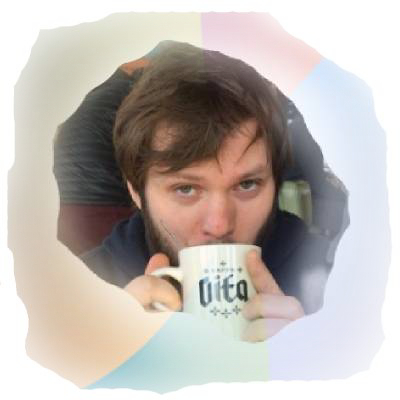

Andrew Jordan's Resume


Overview
Programmer, Artist, Composer. Spend most of my time devloping in the land of python or bash. Have worked with c/c++, c# ,golang, java, javascript, haskell, php, html, css, WASM, etc.The oppourtunity to always be learning new things is what got me into this work. I led the devlopment and design team for The Physical Computing Center and my current job is Senior Systems Operator at Evergreen State College.I also have skills in:
Strong interpersonal communication skills
Technical Training & Instruction
Audio/Video/Event Production
Hiring / Team Management
Embeded Systems
Sales / Marketing
Personal Goal
To see the world, support my family, and learn all the things.[1]. Currently, I am looking for a job that will fullfill these goals.One of my biggest weaknesses is wanting to be helpful to a fault. This leads me to look for work in the fields of public service, NGO's etc. Ultamately, If I can use my talents to do good things for my community and the world; Im happy.Skills
Programming Languages / Markuppython, bash, powershell, ruby, php, c/c++, java, haskell, javascript.
Software
Resolume, MadMapper, Ofx, JetBrains, Unity, git, github, Photoshop, Excel, Word, openscad, arduino ide, vim/emacs/nano (let's not fight), Sketchup, FinalCutPro, One Shot, PremierPro, Illustrator, AfterEffects, Wireshark, GQRX, Radare2, GDB, nmap, Linux/OSX/Windows, Gimp, Basecamp, Trello, Redmine, Agile etc.
Hardware
Vive, 3D Printers,Soldering, I like to build desktops and led displays with DMX and ArtNet.
Other
I play trumpet, bass, keys, drums. Like to write music and mix visuals with Resolume/Ofx.
Work History
December 2017 - PresentSenior Systems Operator - Evergreen State College
May - December 2018
Computer Science Internship - Edurange.org (Cyber Security Training)
2010 - 2016
Produced Live Events and Commercial Video at Punch Drunk in Seattle. Clients Included : Valve Inc, Microsoft, Fred Hutch, Guild Wars, Seattle Interactive Conference, Bumbershoot, Capitol Hill Block Party.